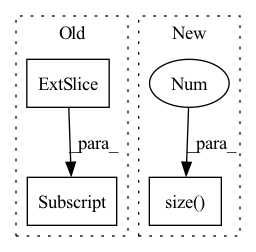

Pattern ID :1282

Before Change
x: B x C x T
noise_level: B
return (x + self.encoding(noise_level)[:, :, None])
def encoding(self, noise_level):
step = torch.arange(
After Change
def forward(self, x, noise_level):
if x.shape[2] > self.pe.shape[1]:
self.init_pe_matrix(x.shape[1] ,x.shape[2], x)
return x + noise_level[..., None, None] + self.pe[:, :x.size(2)].repeat(x.shape[0], 1, 1) / self.C
def init_pe_matrix(self, n_channels, max_len, x):
pe = torch.zeros(max_len, n_channels)
In pattern: SUPERPATTERN
Frequency: 5
Non-data size: 3
Instances
Fragment ID: 3750329
Project Name: coqui-ai/tts
Commit Name: 14c2381207c5972359b2af450a233730ff877ee1
Time: 2020-10-29
Author: erogol@hotmail.com
File Name: TTS/vocoder/layers/wavegrad.py
M Class Name: PositionalEncoding
N Class Name: PositionalEncoding
M Method Name: forward(3)
N Method Name: forward(3)
M Parent Class: nn.Module
N Parent Class: nn.Module
M File Name: TTS/vocoder/layers/wavegrad.py
N File Name: TTS/vocoder/layers/wavegrad.py
M Start Line: 29
M End Line: 29
N Start Line: 50
N End Line: 52
'>
Before Change
timespans = x.new_ones(x.shape[:-1]+(1,)) / x.shape[1]
for t in range(seq_len):
inputs = x[:, t]
ts = timespans[:, t].squeeze()
hidden_state = self.rnn_cell.forward(inputs, hidden_state, ts)
current_output = self.fc(hidden_state[0])
outputs.append(current_output)
After Change
u = u * mask
device = u.device
batch_size = u.size(0)
seq_len = u.size(1)
hidden_state = [
torch.zeros((batch_size, self.d_hidden), device=device),
torch.zeros((batch_size, self.d_hidden), device=device),
'>
Fragment ID: 3750331
Project Name: raminmh/liquid-s4
Commit Name: 52f2ec0442e4b1472915480269dff07788ed7f97
Time: 2022-08-30
Author: mlech26l@gmail.com
File Name: src/models/sequence/mm.py
M Class Name: mmRNN
N Class Name: mmRNN
M Method Name: forward(5)
N Method Name: forward(3)
M Parent Class: nn.Module
N Parent Class: nn.Module
M File Name: src/models/sequence/mm.py
N File Name: src/models/sequence/mm.py
M Start Line: 83
M End Line: 108
N Start Line: 89
N End Line: 123
'>
Before Change
// input should be (seq_len, batch, input_size)
output_seq = torch.stack(batched_output_per_clip, dim=0).transpose_(0, 1)
gru_output, h_n = self.rnn(output_seq.unsqueeze(1)[:, :, :config.GRU_TEMPORAL_WINDOW])
// fc_out = self.fc(gru_output.flatten())
//
After Change
output_seq = torch.stack(batched_output_per_clip, dim=0)
gru_output, h_n = self.rnn(output_seq.unsqueeze(1))
gru_output = gru_output.squeeze(1)
for i in range(gru_output.size(0)):
hr = self.fc_resnet(gru_output[i, :])
// hr = hr * 25.0
hr_per_clip.append(hr)
'>
Fragment ID: 3750330
Project Name: anweshcr7/rhythmnet
Commit Name: deed748087f19356d297fe57e439b967a6a3e617
Time: 2021-03-11
Author: anwesh.marwade@beyondsports.nl
File Name: src/models/rhythmNet.py
M Class Name: RhythmNet
N Class Name: RhythmNet
M Method Name: forward(3)
N Method Name: forward(3)
M Parent Class: nn.Module
N Parent Class: nn.Module
M File Name: src/models/rhythmNet.py
N File Name: src/models/rhythmNet.py
M Start Line: 33
M End Line: 55
N Start Line: 33
N End Line: 66
'>
Before Change
if i == 0:
rec_features.append(rec_feature[:, :inputs[i].size(1)])
else:
rec_features.append(rec_feature[:, \
inputs[i-1].size(1):inputs[i-1].size(1)+inputs[i].size(1)])
"""
if i == 0:
rec_features.append(rec_feature[:, :outs[i].size(-1)])
After Change
fuse = self.fuse(outs, training=training)
logit = self.head(fuse, training=training)
sizes = [torch.flatten(ii,start_dim=1).size(1) for ii in inputs]
rec_features = []
if training:
rec_feature = self.refiner(fuse, training=training)
'>
Fragment ID: 3750333
Project Name: pliang279/multibench
Commit Name: 72e3344b766884b9160fd383b13945be06819481
Time: 2021-06-05
Author: blairc@andrew.cmu.edu
File Name: training_structures/Contrastive_Learning.py
M Class Name: MMDL
N Class Name: MMDL
M Method Name: forward(3)
N Method Name: forward(3)
M Parent Class: nn.Module
N Parent Class: nn.Module
M File Name: training_structures/Contrastive_Learning.py
N File Name: training_structures/Contrastive_Learning.py
M Start Line: 39
M End Line: 52
N Start Line: 37
N End Line: 56
'>
Before Change
self.hidden_size).to(device)
out, _ = self.lstm(input0, (h0, c0))
out = self.attention_net(out)
out = self.fc(out[:, -1, :])
return out
After Change
def forward(self, features, device):
inp = features[0]
self.sequence_length = inp.size(1)
out, _ = self.lstm(inp)
out = self.attention_net(out, device)
out = self.fc1(out)
out = self.fc2(out)
'>
Fragment ID: 3750327
Project Name: logintelligence/logadempirical
Commit Name: a67d9fc74c175ac3aa700fe533e22a6fe62290ab
Time: 2021-06-23
Author: c3363046@uon.edu.au
File Name: logbert/logdeep/models/lstm.py
M Class Name: robustlog
N Class Name: robustlog
M Method Name: forward(3)
N Method Name: forward(3)
M Parent Class: nn.Module
N Parent Class: nn.Module
M File Name: logbert/logdeep/models/lstm.py
N File Name: logbert/logdeep/models/lstm.py
M Start Line: 62
M End Line: 70
N Start Line: 73
N End Line: 79